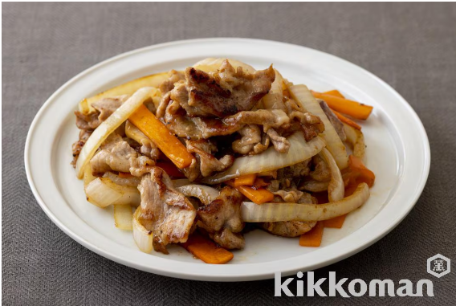

簡単さっぱり！豚肉と玉ねぎとにんじん（人参）のぽんず炒め

材料（2人分）
- 豚肉（こま切れ） ... 200g
- 片栗粉 ... 小さじ２
- 玉ねぎ... 1/2個
- にんじん... 1/3本
- バター... 小さじ1
- ごま油 ... 小さじ１
- キッコーマンしぼりたて生ぽんず ... 大さじ2
作り方（調理時間:10分/目安）
- 豚肉は片栗粉をまぶし、玉ねぎは半月切り、にんじんは長めの短冊切りにする。
- フライパンを熱してバターを入れ、（１）の玉ねぎとにんじんを炒めて取り出し、ごま油を加えて豚肉をほぐしながら焼く。
- 玉ねぎとにんじんをもどし、ぽんずを加えてひと混ぜして器に盛りつける。
引用元
キッコーマンレシピサイト「ホームクッキング」